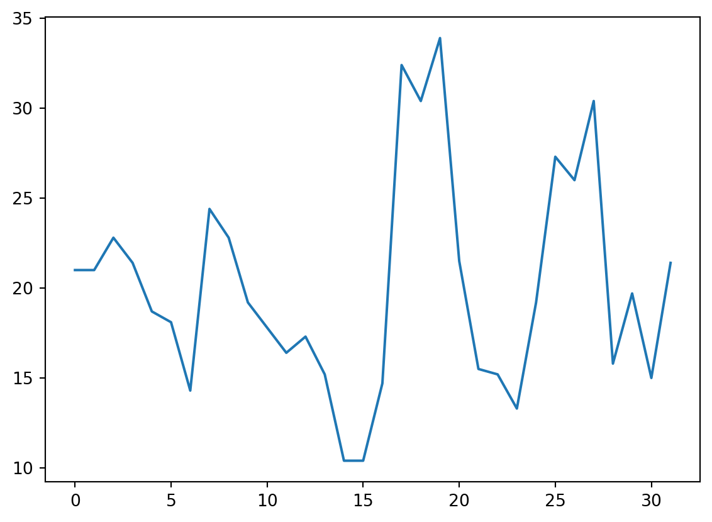
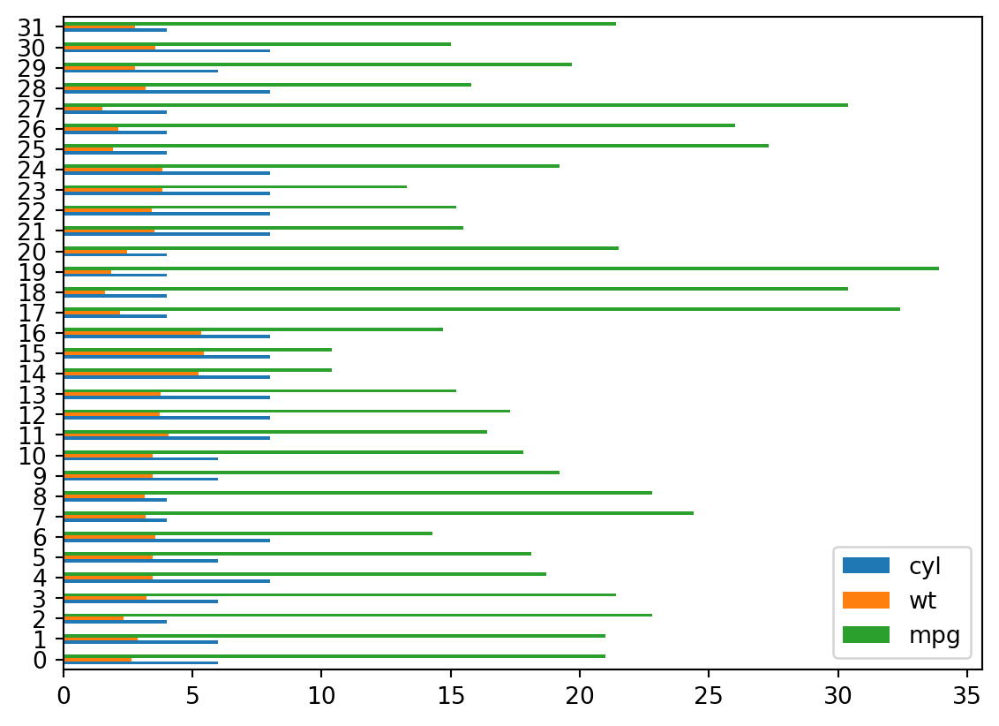
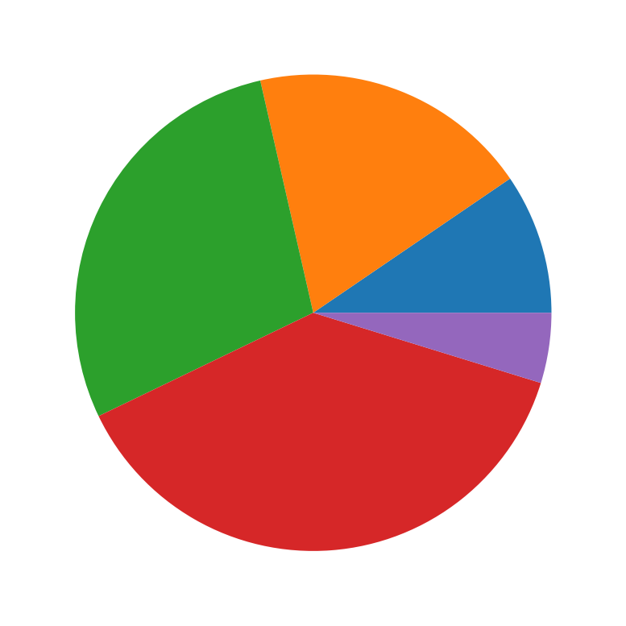

import numpy as np
import pandas as pd
import matplotlib.pyplot as plt
x = range(1, 10)
y = [1,2,3,4,0,4,3,2,1]
plt.plot(x,y)Data storytelling
Make it easy for the audience to get the point
Data showcasing
Showcase lots of data so your audience members can think for themselves
Data Art
Use your data visualization to make a statement
Four Steps to Choosing Data Graphics
- Make a list of the questions that your data visualization is meant to answer
- Is your data visualization type data storytelling, data showcasing, or data art?
- What data graphic types are preferable for that type of data visualizatoin?
- Test out different types of data graphics with your data. Which graphic type displays the most clear and obvious answers to your questions?
Creating Context with Color
Two methods for plot building
- functional method
- object-oriented method
using matplotlib
from pandas object
mtcars = pd.read_csv("mtcars.csv")
mtcars.head()
mpg = mtcars["mpg"]
mpg.plot()<AxesSubplot:>
df = mtcars[["cyl", "wt", "mpg"]]
df.plot()<AxesSubplot:>bar chart
plt.bar(x, y)<BarContainer object of 9 artists>df.plot(kind = "barh")<AxesSubplot:>
Pie chart
x = [1,2,3,4,0.5]
plt.pie(x)
plt.show()
# plt.savefig("pie.png")